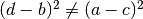
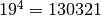

Valores e objetos aleatórios¶
Esta secção é sobre a geração aleatória de valores. Não há uma única maneira de criar valores ou objectos aleatórios em virtude da multiplicidade de bibliotecas e domínios. Apresenta-se neste texto uma lista de possibilidades entre várias. A lista apresenta algumas funções das seguintes bibliotecas:
- módulo ur (conjunto de rotinas que fazem parte do MEGUA);
- funções das bibliotecas Sage Mathematics;
- funções da biblioteca
randomescrita para a linguagem Python;
A biblioteca Unified Random que “gere” a criação de números aleatórios e pode contem informação adicional que não está nesta página.
Inteiros¶
MEGUA - Biblioteca Unified Random
-
ur.iunif(a, b)¶ Retorna um inteiro aleatório N tal que
a <= N <= b(a partir da distribuição uniforme).
sage: ur.iunif(1,11)
11
-
ur.iunif_nonset(a, b, nonset)¶ Retorna um inteiro aleatório N tal que
a <= N <= be N não esteja emnonset.
sage: ur.iunif_nonset(-11,11,[-1,0,1])
-2
Sage - Biblioteca Integer Ring
-
ZZ.random_element(a, b)¶ Retorna um inteiro aleatório N tal que
a <= N < b(a partir da distribuição uniforme).
sage: ZZ.random_element(1,11) #random integer in [1,11[ (open at right)
10
Python - Biblioteca random
-
random.randint(a, b)¶ Retorna um inteiro aleatório N tal que
a <= N <= b(a partir da distribuição uniforme).
sage: random.randint(1,11)
11
Reais¶
MEGUA - Biblioteca Unified Random
-
ur.runif(a, b, prec)¶ Retorna um número real aleatório N tal que
a <= N <= b(a partir da distribuição uniforme) em que a parte decimal tempreccasas decimais.
sage: ur.runif(1,11,2)
9.12
Sage - Biblioteca Double Precision Real Numbers
-
RDF.random_element(min=-1, max=1)¶ Retorna um real aleatório N com a “precisão dupla” tal que
a < N < b. Se não forem passados os argumentos min e max então são considerados os valores -1 e 1.
sage: RDF.random_element()
-0.37186974842
A biblioteca Arbitrary Precision Real Numbers fornece outra maneira.
Na seguinte instrução RealField(15) a precisão é de 15 bits o que equivale, aproximadamente, a números de 4 algarismos:
sage: RealField(15).random_element() #entre -1 e 1
-0.5366
sage: RealField(15).random_element(20,30) #entre 20 e 30
27.17
Python - Biblioteca random
-
random.uniform(a, b)¶ Retorna um real aleatório R tal que
a <= R <= bquandoa <= beb <= N <= aquandob < a. (usa a precisão máxima da máquina)
sage: random.uniform(1,3)
1.1344190566690746
Elemento de uma lista¶
MEGUA - Biblioteca Unified Random
-
ur.random_element(lista)¶ Retorna um elemento ao acaso da lista.
Python - Biblioteca random
-
random.choice(seq)¶ Retorna um elemento da lista (ou sequência) seq se não for vazia. Se seq for uma lista vazia ocorre o erro
IndexError.
sage: random.choice( 'a','b','c')
'b'
sage: random.choice( [exp(1),sin(1),sqrt(2)] )
sin(1)
Túplos que verificam condições¶
Por túplo (n-tuple no inglês) entende-se uma lista de dimensão n em que a ordem pela qual os elementos se encontram interessa. Nota: a palavra túplo não se encontra no dicionário apesar de ser amplamente usada na linguagem em computação.
A garantia de se ter um enunciado e resoluções corretas e com significado passa por uma escolha correta de valores para os parâmetros. Para isso temos dois caminhos para encontrar domínios para os parâmetros:
- Desenvolver a teoria do exercício por forma a encontrar domínios apropriados para os parâmetros.
- Enumeração de possibilidades: técnica da procura por força bruta ou exaustiva, isto é, procurar todas as possibilidades.
Esta secção é sobre o ponto 2. que se enuncia assim: pretende-se obter um túplo aleatório que verifique certas condições, condições estas que surgem da necessidade de um enunciado ser correto ou com valores “amigáveis” e apropriados. Esta tarefa pode ser feita em dois passos:
- geração de uma lista com todos os casos possíveis até certos limites;
- incorporação dessa lista na parte da programação;
- seleção aleatória dum elemento dessa lista.
Consideremos um exemplo ilustrativo.
Queremos túplos (a,b,c,d) constituidos por números inteiros que verifiquem
 e outras condições.
Cada parâmetro inteiro tem que ser pequeno para que o exercício a ser criado não obrigue
a uma aritmética muito demorada. Fixemos, por exemplo, a amplitude entre -9 e 9, existindo 19 elementos
neste conjunto. Como temos 4 variáveis, o espaço de procura de túplos (a,b,c,d) que verifiquem a condição é de tamanho  que é um número pequeno para as
capacidades de computação atuais se as condições a verificar forem rápidas.
A primeira tarefa é a geração de uma lista com todos os casos possíveis até certos limites que pode
ser concretizada numa célula nova do worksheet do exercício em desenvolvimento:
from itertools import ifilter,product
def good_tuple(a,b,c,d):
c1 = (d-b)^2<>(a-c)^2
c2 = a*b+c*d<>0
c3 = d^2-b^2<>(a-c)^2
c4 = (d-b)^2<>a^2-c^2
c5 = a<>0
c6 = b<>0
c7 = c<>0
c8 = d<>0
c9 = a<>1
c10 = a<>-1
c11 = a<>c
return c1 and c2 and c3 and c4 and c5 and c6 and c7 and c8 and c9 and c10 and c11
iterador = ifilter( lambda args: good_tuple(\*args),
product( xrange(-9,10), xrange(-9,10), xrange(-9,10),xrange(-9,10) )
)
casos = [ t for t in iterador ]
print casos
Explicação sobre o código:
- a notação
xrange(-9,10)indica um conjunto de números inteiros de -9 a 9; - o símbolo em python
<>quer dizer diferente ;
; - as condições
c1ac4, neste exmeplo, surgiram da análise dum particular exercício. - as condições restantes eliminam valores concretos
- a última linha é a proposição teórica que garante que o túplo
 é correto; naturalmente, qualquer expressão lógica envolvendo conjunções
é correto; naturalmente, qualquer expressão lógica envolvendo conjunções and, disjunçõesor, ou negaçõesnoté válida na linguagem python.
O número de casos favoráveis para domínios de -9 a 9 é enorme! Incorporar todos estes casos na parte da programação não é prático pois ocupa muitas linhas de texto.
A técnica, ainda não muito interessante do ponto de vista teórico, é então reduzir o domínio de procura, por exemplo, entre -2 e 2. Assim geram-se 80 casos que alinhados já não pesam tanto no texto que define a programação.
iterador = ifilter( lambda args: good_tuple(*args),
product( xrange(-2,3), xrange(-2,3), xrange(-2,3),xrange(-2,3) )
)
casos = [ t for t in iterador ]
print casos
[(-2, -2, -1, -2), (-2, -2, -1, 1), (-2, -2, -1, 2), (-2, -2, 1, -3), (-2, -2, 1, -2), (-2, -2, 1, -1), (-2, -2, 1, 2), (-2, -2, 2, -3), (-2, -2, 2, -1), (-2, -2, 2, 1), (-2, -1, -1, -3), (-2, -1, -1, -1), (-2, -1, -1, 1), (-2, -1, 1, -3), (-2, -1, 1, -1), (-2, -1, 1, 1), (-2, -1, 2, -3), (-2, -1, 2, -2), (-2, -1, 2, 1), (-2, -1, 2, 2), (-2, 1, -1, -3), (-2, 1, -1, -1), (-2, 1, -1, 1), (-2, 1, 1, -3), (-2, 1, 1, -1), (-2, 1, 1, 1), (-2, 1, 2, -2), (-2, 1, 2, -1), (-2, 1, 2, 2), (-2, 2, -1, -3), (-2, 2, -1, -2), (-2, 2, -1, -1), (-2, 2, -1, 2), (-2, 2, 1, -3), (-2, 2, 1, -2), (-2, 2, 1, 1), (-2, 2, 1, 2), (-2, 2, 2, -3), (-2, 2, 2, -1), (-2, 2, 2, 1), (2, -2, -2, -3), (2, -2, -2, -1), (2, -2, -2, 1), (2, -2, -1, -3), (2, -2, -1, -2), (2, -2, -1, -1), (2, -2, -1, 2), (2, -2, 1, -2), (2, -2, 1, 1), (2, -2, 1, 2), (2, -1, -2, -3), (2, -1, -2, -2), (2, -1, -2, 1), (2, -1, -2, 2), (2, -1, -1, -3), (2, -1, -1, -1), (2, -1, -1, 1), (2, -1, 1, -3), (2, -1, 1, -1), (2, -1, 1, 1), (2, 1, -2, -2), (2, 1, -2, -1), (2, 1, -2, 2), (2, 1, -1, -3), (2, 1, -1, -1), (2, 1, -1, 1), (2, 1, 1, -3), (2, 1, 1, -1), (2, 1, 1, 1), (2, 2, -2, -3), (2, 2, -2, -1), (2, 2, -2, 1), (2, 2, -1, -3), (2, 2, -1, -2), (2, 2, -1, 1), (2, 2, -1, 2), (2, 2, 1, -3), (2, 2, 1, -2), (2, 2, 1, -1), (2, 2, 1, 2)]
- A segunda tarefa é a incorporação dos valors obtidos na parte da programação do exercício pois
- basta calcular a lista de túplos possíveis uma única vez. O código anterior resulta na seguinte lista:
meg.save(r"""
(aqui a parte do texto)
class E12X34_numeros_001(Exercise):
casos = [(-2, -2, -1, -2), (-2, -2, -1, 1), (-2, -2, -1, 2), (-2, -2, 1, -3),
(-2, -2, 1, -2), (-2, -2, 1, -1), (-2, -2, 1, 2), (-2, -2, 2, -3), (-2, -2, 2, -1),
(-2, -2, 2, 1), (-2, -1, -1, -3), (-2, -1, -1, -1), (-2, -1, -1, 1), (-2, -1, 1, -3),
(-2, -1, 1, -1), (-2, -1, 1, 1), (-2, -1, 2, -3), (-2, -1, 2, -2), (-2, -1, 2, 1),
(-2, -1, 2, 2), (-2, 1, -1, -3), (-2, 1, -1, -1), (-2, 1, -1, 1), (-2, 1, 1, -3),
(-2, 1, 1, -1), (-2, 1, 1, 1), (-2, 1, 2, -2), (-2, 1, 2, -1), (-2, 1, 2, 2),
(-2, 2, -1, -3), (-2, 2, -1, -2), (-2, 2, -1, -1), (-2, 2, -1, 2), (-2, 2, 1, -3),
(-2, 2, 1, -2), (-2, 2, 1, 1), (-2, 2, 1, 2), (-2, 2, 2, -3), (-2, 2, 2, -1),
(-2, 2, 2, 1), (2, -2, -2, -3), (2, -2, -2, -1), (2, -2, -2, 1), (2, -2, -1, -3),
(2, -2, -1, -2), (2, -2, -1, -1), (2, -2, -1, 2), (2, -2, 1, -2), (2, -2, 1, 1),
(2, -2, 1, 2), (2, -1, -2, -3), (2, -1, -2, -2), (2, -1, -2, 1), (2, -1, -2, 2),
(2, -1, -1, -3), (2, -1, -1, -1), (2, -1, -1, 1), (2, -1, 1, -3), (2, -1, 1, -1),
(2, -1, 1, 1), (2, 1, -2, -2), (2, 1, -2, -1), (2, 1, -2, 2), (2, 1, -1, -3),
(2, 1, -1, -1), (2, 1, -1, 1), (2, 1, 1, -3), (2, 1, 1, -1), (2, 1, 1, 1), (2, 2, -2, -3),
(2, 2, -2, -1), (2, 2, -2, 1), (2, 2, -1, -3), (2, 2, -1, -2), (2, 2, -1, 1),
(2, 2, -1, 2), (2, 2, 1, -3), (2, 2, 1, -2), (2, 2, 1, -1), (2, 2, 1, 2)
]
def make_random(s):
s.av, s.bv, s.cv, s.dv = choice(casos)
def solve(s):
(aqui utilizar as variáveis aleatórias s.av, s.bv, s.cv, s.dv)
""")
Por fim, a selecção aleatória dum elemento dessa lista já aparece acima especificada:
s.av, s.bv, s.cv, s.dv = choice(casos)
em que os 4 parâmetros tomam um túplo escolhido aleatoriamente da lista obtida. O fato desta lista fazer parte da programação faz com que não seja necessário calculá-la sempre que se quer um exercício novo.